source("_common.r")
list.files("funs", full.names = TRUE) |>
purrr::walk(source)
options(digits = 3)
options(tinytable_tt_digits = 2)Challenge 07 – Solution
Datum/Uhrzeit: 2026-01-09 15:24
“Eine Hackathon-Variante zur Evaluation der Klickdaten des KI-Tools ‘HaNS’”
Betrachten Sie dazu die Targets-Datei auf Github.
1 Setup
1.1 Libs
1.2 Other setup
1.3 Load Targets
tar_load(c(
data_separated_filtered,
data_separated_filtered_date_uni_course,
idvisit_has_llm,
prompt_length,
prompt_length_date_uni_course,
n_interactions_w_llm_course_date_course_uni,
llm_response_text,
llm_response_text_date_course_uni
))2 Musterlösung
2.1 Auf welche Art und wie oft wird mit dem LLM interagiert? Suchen Sie dafür nach eventcategory “llm” – zählen Sie die Werte der verschiedenen Kategorien.
data_separated_filtered_ai <-
data_separated_filtered |>
filter(type == "eventcategory") |>
filter(str_detect(value, "llm")) |>
count(value, sort = TRUE) |>
mutate(prop = n / sum(n))
data_separated_filtered_ai |>
kable(digits = 1)| value | n | prop |
|---|---|---|
| message_to_llm | 166 | 0.3 |
| message_to_llm_de | 162 | 0.3 |
| llm_response_de | 140 | 0.2 |
| select_transcript_text_for_llm_context | 108 | 0.2 |
| clear_transcript_text_for_llm_context | 3 | 0.0 |
| llm_response_en | 1 | 0.0 |
| message_to_llm_en | 1 | 0.0 |
Als “Bild-Tabelle”:
data_separated_filtered_ai |>
mutate(prop = round(prop, 3)) |>
ggtexttable()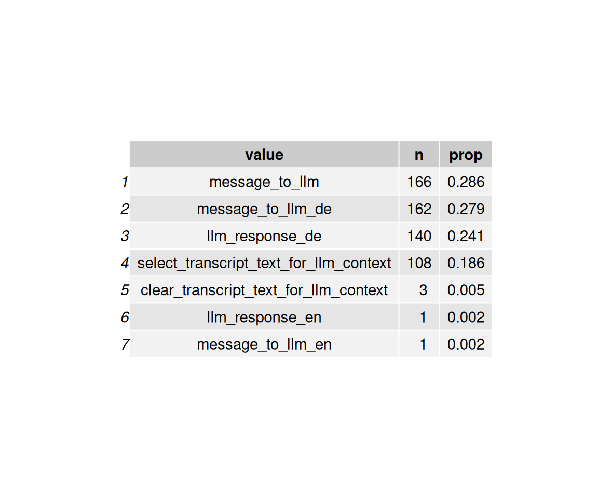
Man beachte das Sortieren der Balken:
data_separated_filtered_ai |>
ggplot() +
aes(x = prop, y = value) +
geom_col()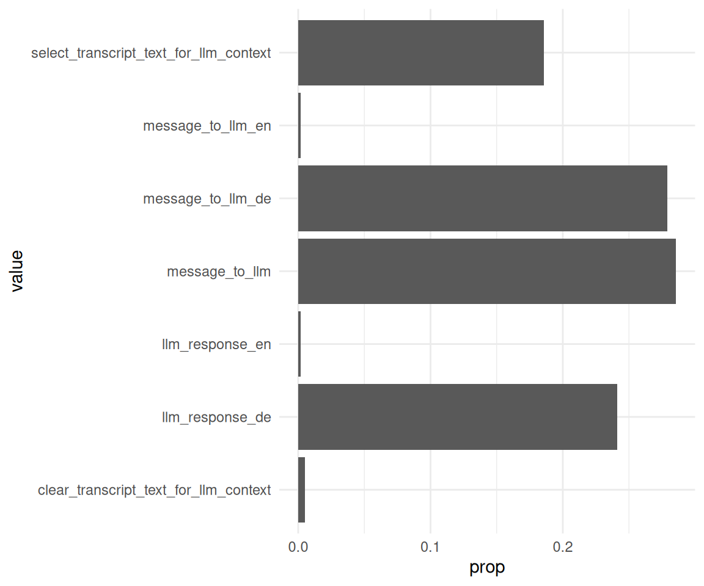
data_separated_filtered_ai |>
mutate(value = fct_reorder(.f = value, .x = prop)) |>
ggplot() +
aes(x = prop, y = value) +
geom_col()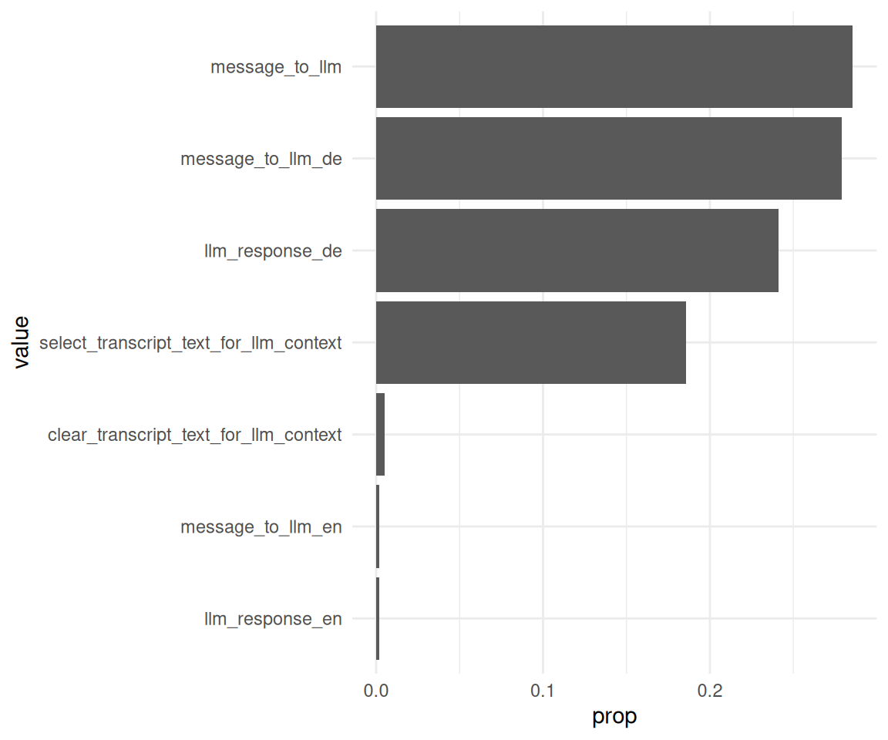
2.2 Wie viele Nachrichten werden an das LLM gesendet von den Besuchern?
llm_interactions <-
data_separated_filtered |>
filter(str_detect(value, "message_to_llm"))Statistiken:
llm_interactions_count <-
llm_interactions |>
count(idvisit, sort = TRUE) |>
rename(messages_to_llm_n = n)
llm_interactions_count |>
describe_distribution(messages_to_llm_n, centrality = c("mean", "median")) |>
print_md()| Variable | Median | MAD | Mean | SD | IQR | Range | Skewness | Kurtosis | n | n_Missing |
|---|---|---|---|---|---|---|---|---|---|---|
| messages_to_llm_n | 4 | 1.48 | 9.40 | 8.88 | 8 | (2.00, 44.00) | 2.31 | 5.62 | 70 | 0 |
Man beachte das print_md.
gghistogram(
llm_interactions_count,
x = "Number of messages sent to the LLM",
y = "Count",
bins = 10,
add = "median"
) +
labs(caption = "The vertical dotted line denotes the median.")
## Error in `purrr::pmap()`:
## ℹ In index: 1.
## ℹ With name: Count.
## Caused by error in `ans[npos] <- rep(no, length.out = len)[npos]`:
## ! Ersetzung hat Länge 02.3 Wie groß ist der Anteil der Besucher, die mit dem LLM interagieren?
Für Tabellen gibt es mehrere Möglichkeiten, z.B. kable oder gt.
data_separated_filtered_llm_interact <-
data_separated_filtered |>
mutate(has_llm = str_detect(value, "llm")) |>
group_by(idvisit) |>
summarise(llm_used_during_visit = any(has_llm == TRUE)) |>
count(llm_used_during_visit) |>
mutate(prop = round(n / sum(n), 2))
data_separated_filtered_llm_interact |>
gt()| llm_used_during_visit | n | prop |
|---|---|---|
| FALSE | 2644 | 0.94 |
| TRUE | 180 | 0.06 |
Bonus - Auswertung pro fingerprint:
data_separated_filtered_llm_interact_fingerprint <-
data_separated_filtered |>
mutate(has_llm = str_detect(value, "llm")) |>
group_by(fingerprint) |>
summarise(llm_used_during_visit = any(has_llm == TRUE)) |>
count(llm_used_during_visit) |>
mutate(prop = round(n / sum(n), 2))
data_separated_filtered_llm_interact_fingerprint |>
gt()| llm_used_during_visit | n | prop |
|---|---|---|
| FALSE | 1158 | 0.91 |
| TRUE | 121 | 0.09 |
2.4 Wie groß ist der Anteil der Besucher, die mit dem LLM interagieren, pro Kunde (Hochschule)?
data_separated_filtered_llm_interact_uni <-
data_separated_filtered_date_uni_course |>
mutate(has_llm = str_detect(value, "llm")) |>
group_by(university, idvisit) |>
summarise(llm_used_during_visit = any(has_llm == TRUE)) |>
count(llm_used_during_visit) |>
mutate(prop = round(n / sum(n), 2)) 2.4.1 Mit gt
data_separated_filtered_llm_interact_uni |>
gt()| llm_used_during_visit | n | prop |
|---|---|---|
| evhn | ||
| FALSE | 1 | 0.25 |
| TRUE | 3 | 0.75 |
| hnu | ||
| FALSE | 8 | 0.89 |
| TRUE | 1 | 0.11 |
| hswt | ||
| FALSE | 816 | 0.97 |
| TRUE | 29 | 0.03 |
| th-nuernberg | ||
| FALSE | 779 | 0.92 |
| TRUE | 71 | 0.08 |
| th-owl | ||
| FALSE | 1 | 1.00 |
| thi | ||
| FALSE | 1 | 1.00 |
| NA | ||
| FALSE | 1038 | 0.93 |
| TRUE | 76 | 0.07 |
2.4.2 Mit kable
data_separated_filtered_llm_interact_uni |>
kable()| university | llm_used_during_visit | n | prop |
|---|---|---|---|
| evhn | FALSE | 1 | 0.25 |
| evhn | TRUE | 3 | 0.75 |
| hnu | FALSE | 8 | 0.89 |
| hnu | TRUE | 1 | 0.11 |
| hswt | FALSE | 816 | 0.97 |
| hswt | TRUE | 29 | 0.03 |
| th-nuernberg | FALSE | 779 | 0.92 |
| th-nuernberg | TRUE | 71 | 0.08 |
| th-owl | FALSE | 1 | 1.00 |
| thi | FALSE | 1 | 1.00 |
| NA | FALSE | 1038 | 0.93 |
| NA | TRUE | 76 | 0.07 |
2.4.3 Mit tinytable
data_separated_filtered_llm_interact_uni |>
tt()| university | llm_used_during_visit | n | prop |
|---|---|---|---|
| evhn | FALSE | 1 | 0.25 |
| evhn | TRUE | 3 | 0.75 |
| hnu | FALSE | 8 | 0.89 |
| hnu | TRUE | 1 | 0.11 |
| hswt | FALSE | 816 | 0.97 |
| hswt | TRUE | 29 | 0.03 |
| th-nuernberg | FALSE | 779 | 0.92 |
| th-nuernberg | TRUE | 71 | 0.08 |
| th-owl | FALSE | 1 | 1.00 |
| thi | FALSE | 1 | 1.00 |
| NA | FALSE | 1038 | 0.93 |
| NA | TRUE | 76 | 0.07 |
2.5 Verändert sich der Anteil der Besucher, die mit dem LLM interagieren, im Zeitverlauf?
idvisit_has_llm_timeline <-
idvisit_has_llm |>
count(year_month, uses_llm) |>
ungroup() |>
group_by(year_month) |>
mutate(prop = round(n / sum(n), 2))
idvisit_has_llm_timelineidvisit_has_llm |>
count(year_month, uses_llm) |>
ungroup() |>
mutate(year_month_date = ymd(paste0(year_month, "-01"))) |>
group_by(year_month_date) |>
mutate(prop = n / sum(n)) |>
ggplot(aes(
x = year_month_date,
y = prop,
color = uses_llm,
groups = uses_llm
)) +
# --- Highlight March–July (approx 1 Mar to 31 Jul) ---
annotate(
"rect",
xmin = as.Date("2023-03-01"),
xmax = as.Date("2023-07-31"),
ymin = -Inf,
ymax = Inf,
alpha = 0.2,
fill = "skyblue"
) +
annotate(
"rect",
xmin = as.Date("2024-03-01"),
xmax = as.Date("2024-07-31"),
ymin = -Inf,
ymax = Inf,
alpha = 0.2,
fill = "skyblue"
) +
annotate(
"rect",
xmin = as.Date("2025-03-01"),
xmax = as.Date("2025-07-31"),
ymin = -Inf,
ymax = Inf,
alpha = 0.2,
fill = "skyblue"
) +
# --- Highlight October–February (semester break or 2nd term) ---
annotate(
"rect",
xmin = as.Date("2023-10-01"),
xmax = as.Date("2024-02-28"),
ymin = -Inf,
ymax = Inf,
alpha = 0.2,
fill = "orange"
) +
# annotate("rect",
# xmin = as.Date("2024-10-01"), xmax = as.Date("2024-02-28"),
# ymin = -Inf, ymax = Inf, alpha = 0.2, fill = "orange") +
annotate(
"rect",
xmin = as.Date("2024-10-01"),
xmax = as.Date("2025-02-28"),
ymin = -Inf,
ymax = Inf,
alpha = 0.2,
fill = "orange"
) +
geom_point() +
geom_line(aes(group = uses_llm)) +
labs(
title = "Visitors, die mit dem LLM interagieren im Zeitverlauf (Anteile)"
) +
scale_x_date(breaks = pretty_breaks())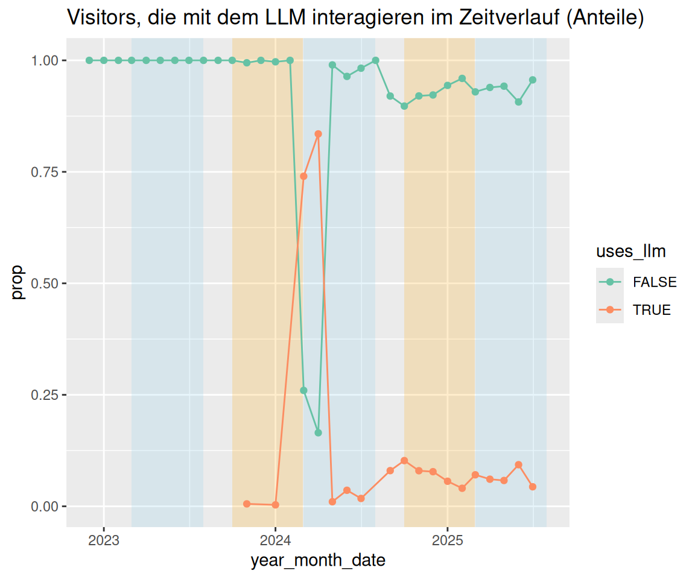
pretty_breaks sind eine praktische Angelegenheit.
idvisit_has_llm |>
count(year_month, uses_llm) |>
ungroup() |>
mutate(year_month_date = ymd(paste0(year_month, "-01"))) |>
group_by(year_month_date) |>
# ADDED: Calculate the proportion
mutate(proportion = n / sum(n)) |>
# Plot using the new 'proportion' variable
ggplot(aes(x = year_month_date, y = proportion, fill = uses_llm)) +
# ADDED: Use position = "fill"
geom_area(position = "fill") +
# ADDED: Format y-axis as percentage
scale_y_continuous(labels = scales::label_percent()) +
labs(
title = "Anteil der Besucher, die mit dem LLM interagieren (Prozent)",
y = "Prozentualer Anteil der Besucher",
fill = "Interagiert mit LLM",
x = "Datum"
) +
scale_x_date(breaks = pretty_breaks())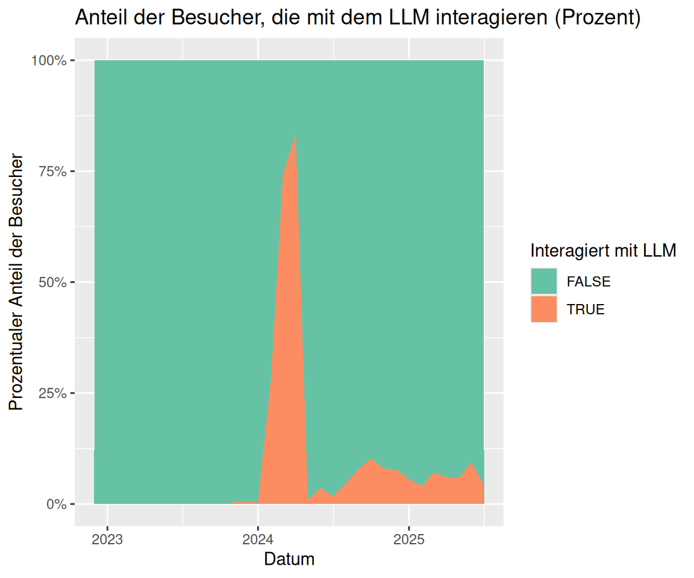
2.6 Bonus: Veränderung der LLM-Nutzung im Zeitverlauf
# --- 1. Prepare Data ---
# Your original data processing for the plot
plot_data <- n_interactions_w_llm_course_date_course_uni |>
group_by(floor_date_month) |>
summarise(n = n()) |>
ungroup() # Ungroup after summarise for easier use with ggplot
# --- 2. Determine Plot Range for Rectangles ---
# Find the min/max year and n-count from your *processed* plot_data
min_date <- min(plot_data$floor_date_month, na.rm = TRUE)
max_date <- max(plot_data$floor_date_month, na.rm = TRUE)
min_year <- year(min_date)
max_year <- year(max_date)
# Determine the Y-axis bounds for the rectangles
y_min <- min(plot_data$n, na.rm = TRUE)
y_max <- max(plot_data$n, na.rm = TRUE)
# --- 3. Calculate the Rectangle Coordinates (rect_data) ---
# Generate years for the rectangles, ensuring we cover the full range
# including potentially starting a "winter" semester in the min_year-1
# and ending in max_year+1
rect_years <- seq(min_year - 1, max_year + 1)
# Summer semester: March 1 (Y) to July 1 (Y)
summer_rects <- tibble(year = rect_years) |>
mutate(
xmin = ymd(paste0(year, "-03-01")),
xmax = ymd(paste0(year, "-07-01"))
)
# Winter semester: October 1 (Y) to February 1 (Y+1)
winter_rects <- tibble(year = rect_years) |>
mutate(
xmin = ymd(paste0(year, "-10-01")),
xmax = ymd(paste0(year + 1, "-02-01"))
)
# Combine, set Y bounds, and filter to the actual plot area
rect_data <- bind_rows(summer_rects, winter_rects) |>
mutate(ymin = y_min, ymax = y_max) |>
# Only keep rectangles that are fully or partially within the plot's X range
filter(
xmin <= max_date,
xmax >= min_date
)
# --- 4. Generate the Final Plot ---
plot_data |>
ggplot(aes(x = floor_date_month, y = n)) +
# Add the transparent grey rectangles first
geom_rect(
data = rect_data,
aes(xmin = xmin, xmax = xmax, ymin = ymin, ymax = ymax),
fill = "grey",
alpha = 0.2,
inherit.aes = FALSE # Essential to use the rect_data columns
) +
# Then plot the lines and points on top
geom_line() +
geom_point() + # Added point layer for clarity at each month
theme_minimal() +
labs(
title = "Number of Interactions with LLM per Course Date",
x = "Date",
y = "Number of Interactions"
) 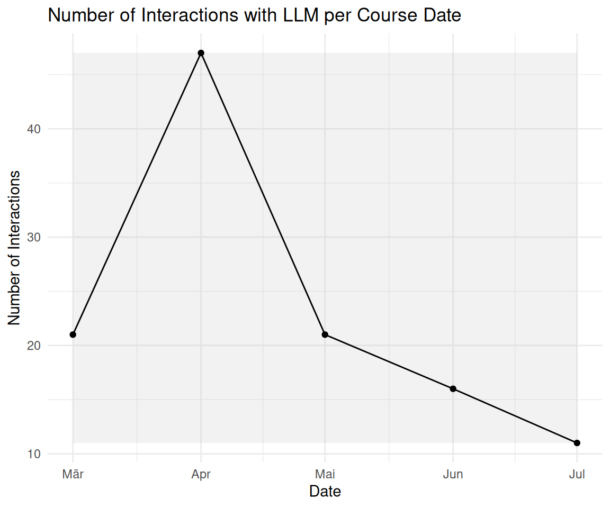
2.7 Die Länge der Prompts an das LLM ist wichtig zu wissen (da potenziell teuer). Werten Sie die Länge der Prompts an das LLM pro Visit aus. Messen Sie die Länge der Prompts in Tokens.
prompt_length_no_prompts <-
prompt_length |>
select(-any_of(c("prompt", "value", "type")))prompt_length_no_prompts |>
describe_distribution(token_length) |>
print_md()| Variable | Mean | SD | IQR | Range | Skewness | Kurtosis | n | n_Missing |
|---|---|---|---|---|---|---|---|---|
| token_length | 6.77 | 4.47 | 4.50 | (1.00, 26.00) | 1.30 | 2.39 | 329 | 0 |
prompt_length_no_prompts |>
ggplot(aes(x = token_length)) +
geom_histogram(binwidth = 5) +
labs(
title = "Length of prompts sent to the LLM",
x = "Prompt length (in tokens)",
y = "Number of prompts"
) +
theme_minimal()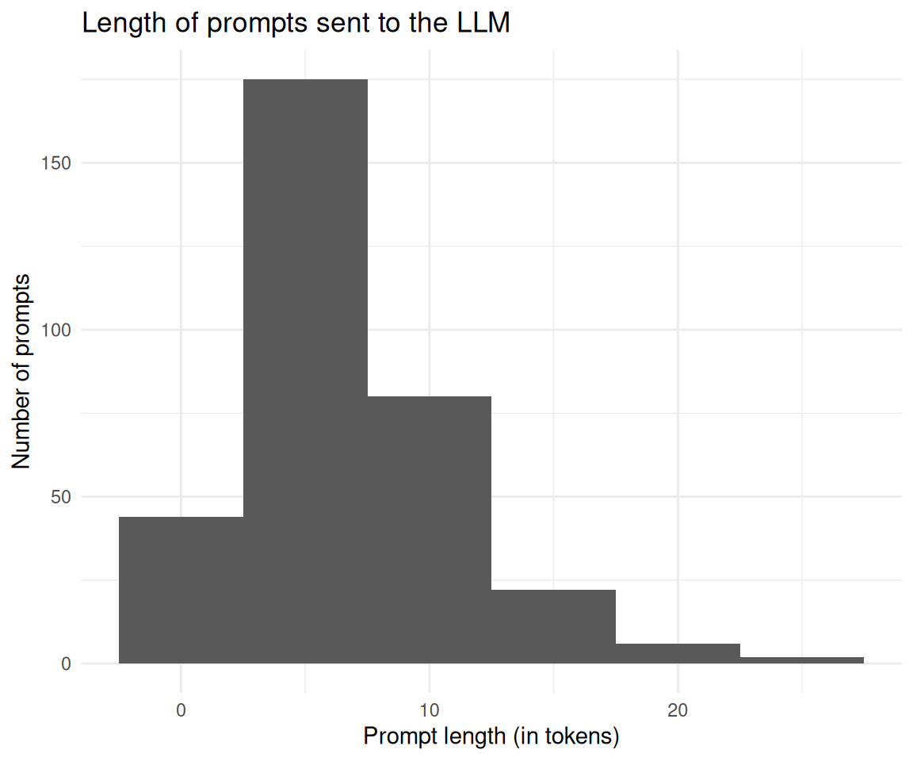
2.8 Unterscheidet sich die Token-Länge zwischen den Kunden (d.h. Hochschulen)?
prompt_length_date_uni_course |>
group_by(university) |>
describe_distribution(token_length) |>
print_md()| university | Variable | Mean | SD | IQR | Range | Skewness | Kurtosis | n | n_Missing |
|---|---|---|---|---|---|---|---|---|---|
| evhn | token_length | (Inf, -Inf) | 0 | 4 | |||||
| hnu | token_length | 7.00 | 0.00 | 0.00 | (7.00, 7.00) | 6 | 8 | ||
| hswt | token_length | 6.54 | 4.08 | 9.00 | (1.00, 12.00) | -0.15 | -1.47 | 48 | 830 |
| th-nuernberg | token_length | 7.67 | 4.86 | 5.25 | (1.00, 26.00) | 1.61 | 4.47 | 66 | 841 |
| th-owl | token_length | (Inf, -Inf) | 0 | 1 | |||||
| thi | token_length | (Inf, -Inf) | 0 | 1 |
ggboxplot(
prompt_length_date_uni_course,
x = "university",
y = "token_length",
add = "mean_se",
) +
theme_minimal() +
labs(
title = "Prompt length by university",
x = "University",
y = "Prompt length (in tokens)"
) +
coord_flip()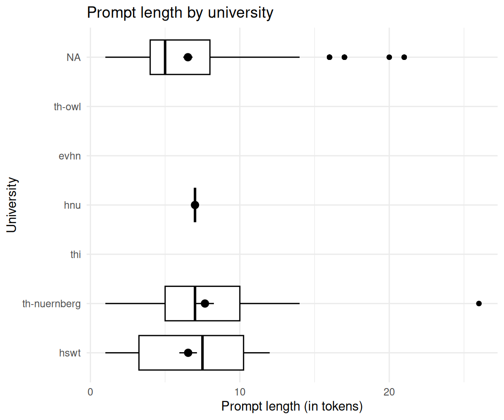
2.9 Unterscheidet sich die Token-Länge zwischen den Modulen?
prompt_length_date_uni_course |>
group_by(course) |>
describe_distribution(token_length) |>
print_md()| course | Variable | Mean | SD | IQR | Range | Skewness | Kurtosis | n | n_Missing |
|---|---|---|---|---|---|---|---|---|---|
| bare | token_length | 7.00 | 0.00 | 0 | (7.00, 7.00) | 6 | 8 | ||
| bio | token_length | (Inf, -Inf) | 0 | 4 | |||||
| cta1 | token_length | 6.54 | 4.08 | 9 | (1.00, 12.00) | -0.15 | -1.47 | 48 | 830 |
| daba | token_length | (Inf, -Inf) | 0 | 2 | |||||
| etechde | token_length | (Inf, -Inf) | 0 | 1 | |||||
| fodesoa | token_length | (Inf, -Inf) | 0 | 56 | |||||
| fosaq | token_length | (Inf, -Inf) | 0 | 22 | |||||
| gdi | token_length | (Inf, -Inf) | 0 | 22 | |||||
| gesoa | token_length | 7.65 | 4.96 | 5 | (1.00, 26.00) | 1.63 | 4.41 | 62 | 659 |
| mat11akzg | token_length | (Inf, -Inf) | 0 | 2 | |||||
| nlp | token_length | 8.00 | 3.46 | 6 | (5.00, 11.00) | 0.00 | -6.00 | 4 | 65 |
| softa | token_length | (Inf, -Inf) | 0 | 4 | |||||
| thesoa | token_length | (Inf, -Inf) | 0 | 7 | |||||
| wirkori | token_length | (Inf, -Inf) | 0 | 4 | |||||
| zemiws | token_length | (Inf, -Inf) | 0 | 1 |
2.10 Unterscheidet sich die Token-Länge im Zeitverlauf?
prompt_length_date_uni_course |>
group_by(floor_date_month) |>
describe_distribution(token_length) |>
print_md()| floor_date_month | Variable | Mean | SD | IQR | Range | Skewness | Kurtosis | n | n_Missing |
|---|---|---|---|---|---|---|---|---|---|
| 2025-03-01 | token_length | 8.03 | 5.88 | 8.00 | (1.00, 21.00) | 0.79 | -0.36 | 62 | 488 |
| 2025-04-01 | token_length | 6.16 | 3.68 | 4.00 | (1.00, 17.00) | 0.77 | 0.24 | 191 | 978 |
| 2025-05-01 | token_length | 6.38 | 2.77 | 5.00 | (3.00, 11.00) | 0.26 | -1.47 | 37 | 546 |
| 2025-06-01 | token_length | 8.72 | 6.69 | 3.00 | (1.00, 26.00) | 1.33 | 1.77 | 29 | 315 |
| 2025-07-01 | token_length | 6.20 | 2.62 | 2.50 | (4.00, 11.00) | 1.50 | 0.86 | 10 | 427 |
# Calculate limits properly
filtered_data <- prompt_length_date_uni_course |>
filter(!is.na(floor_date_month)) |>
mutate(floor_date_month_date = as.Date(floor_date_month))
lim <- c(
min(filtered_data$floor_date_month_date, na.rm = TRUE),
max(filtered_data$floor_date_month_date, na.rm = TRUE)
)
# Now create the plot
filtered_data |>
ggplot(aes(x = floor_date_month_date, y = token_length)) +
geom_violin(aes(group = floor_date_month_date)) +
stat_summary(fun = "mean", geom = "point") +
stat_summary(fun.data = "mean_se", geom = "errorbar", width = 0.2) +
theme_minimal() +
labs(
title = "Prompt length over time",
x = "Date",
y = "Prompt length (in tokens)",
caption = "The dots represent the mean and the error bars the standard error of the mean."
) +
scale_x_date(limits = lim, labels = scales::label_date_short()) 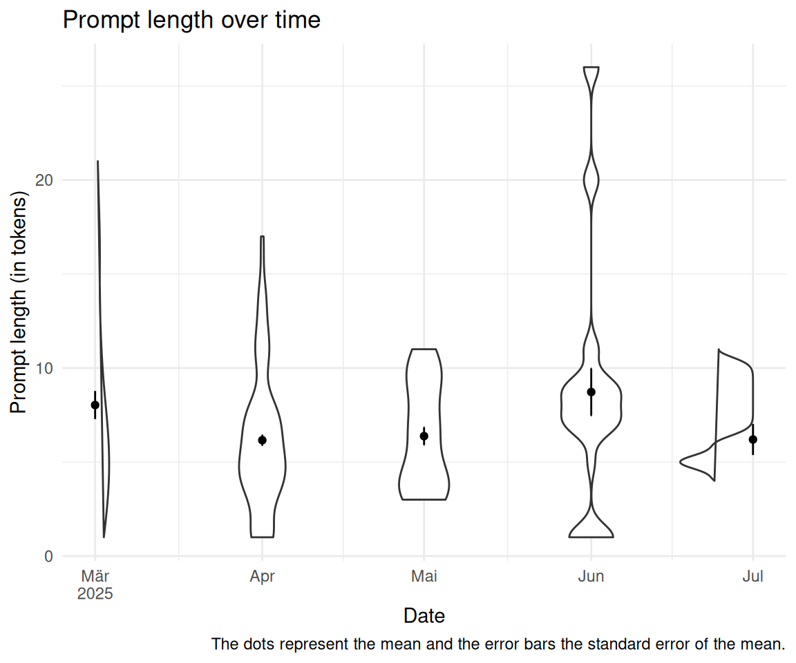
2.11 Wie oft wird wird auf ein Wort im LLM-Transkript geklickt?
data_separated_filtered |>
filter(type == "subtitle") |>
# rm empty rows:
filter(!is.na(value) & value != "") |>
count(click_transcript_word = str_detect(value, "click_transcript_word")) |>
mutate(prop = round(n / sum(n), 2)) |>
gt()| click_transcript_word | n | prop |
|---|---|---|
| FALSE | 227934 | 1 |
| TRUE | 557 | 0 |
2.12 Wie verändert sich dieser Wert im Zeitverlauf?
click_transcript_word_per_month <-
data_separated_filtered |>
# rm all groups WITHOUT "click_transcript_word":
group_by(idvisit) |>
filter(!any(value = str_detect(value, "click_transcript_word"))) |>
ungroup() |>
mutate(date_visit = ymd_hms(value)) |>
mutate(month_visit = floor_date(date_visit, unit = "month")) |>
drop_na(date_visit) |>
group_by(idvisit) |>
slice(1) |>
ungroup() |>
count(month_visit)
click_transcript_word_per_monthrect_data_word_per_month <- comp_semester_rects(
click_transcript_word_per_month,
col_date = "month_visit"
)
click_transcript_word_per_month |>
ggplot(aes(x = month_visit, y = n)) +
geom_rect(
data = rect_data,
aes(xmin = xmin, xmax = xmax, ymin = ymin, ymax = Inf),
fill = "grey",
alpha = 0.2,
inherit.aes = FALSE # Essential to use the rect_data columns
) +
geom_line() +
geom_smooth(method = "loess", se = FALSE, color = "blue", alpha = 0.7) +
scale_x_date(labels = scales::label_date_short())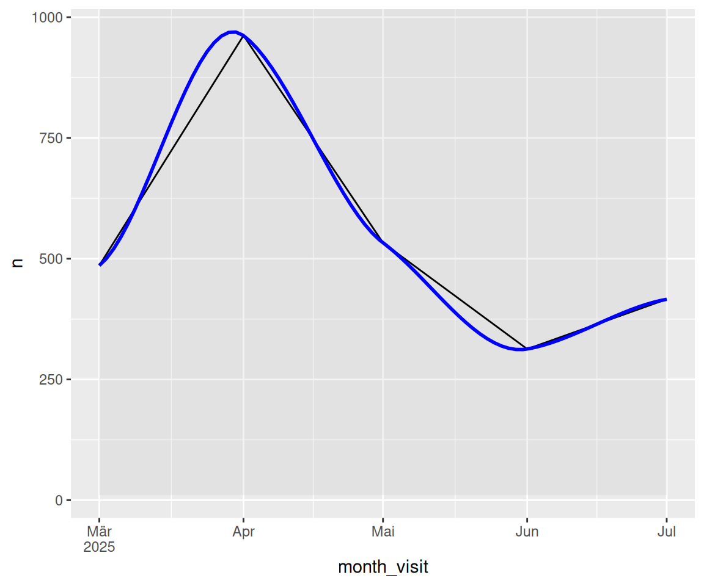
2.13 Wie lang ist der Output des LLMs (in Tokens)?
2.13.1 De vs. En
llm_response_text |>
count(lang) |>
mutate(prob = n / sum(n))2.13.2 Verteilung der Anzahl der Tokens
llm_response_text |>
describe_distribution(select = "tokens_n") |>
print_md()| Variable | Mean | SD | IQR | Range | Skewness | Kurtosis | n | n_Missing |
|---|---|---|---|---|---|---|---|---|
| tokens_n | 184.14 | 104.40 | 155.50 | (11.00, 656.00) | 0.45 | 0.31 | 397 | 0 |
2.14 Gruppieren Sie die Länge des Outputs des LLMs nach Kunden (Hochschulen).
llm_response_text_date_course_uni |>
group_by(university) |>
describe_distribution(select = "tokens_n")llm_response_text_date_course_uni |>
ggboxplot(
x = "university",
y = "tokens_n",
add = "mean_se"
) +
theme_minimal() +
labs(
title = "Number of tokens in LLM responses by university",
x = "University",
y = "Number of tokens"
) +
coord_flip()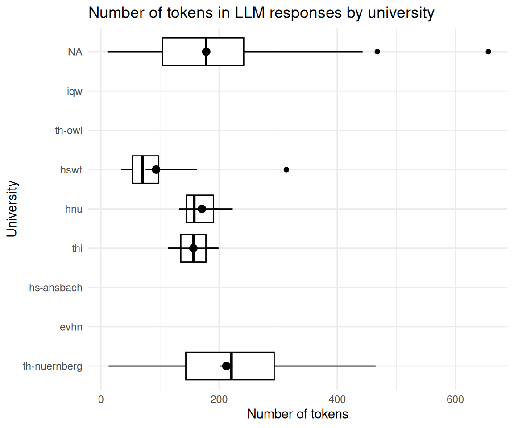
2.15 Anzahl der Token nach Kursen
llm_response_text_date_course_uni |>
group_by(course) |>
describe_distribution(select = "tokens_n") |>
print_md()| course | Variable | Mean | SD | IQR | Range | Skewness | Kurtosis | n | n_Missing |
|---|---|---|---|---|---|---|---|---|---|
| anis2 | tokens_n | (Inf, -Inf) | 0 | 43 | |||||
| armeufa | tokens_n | (Inf, -Inf) | 0 | 2 | |||||
| bare | tokens_n | 171.00 | 46.87 | 91.00 | (132.00, 223.00) | 1.15 | -1.50 | 3 | 12 |
| bio | tokens_n | (Inf, -Inf) | 0 | 168 | |||||
| biotech | tokens_n | (Inf, -Inf) | 0 | 127 | |||||
| biovete | tokens_n | (Inf, -Inf) | 0 | 244 | |||||
| cta1 | tokens_n | 93.38 | 71.24 | 72.75 | (34.00, 314.00) | 2.27 | 5.78 | 16 | 1101 |
| daba | tokens_n | 173.00 | 0.00 | (173.00, 173.00) | 1 | 197 | |||
| enerbi | tokens_n | (Inf, -Inf) | 0 | 10 | |||||
| epsy | tokens_n | (Inf, -Inf) | 0 | 1 | |||||
| etechde | tokens_n | (Inf, -Inf) | 0 | 3 | |||||
| fodesoa | tokens_n | 256.00 | 0.00 | (256.00, 256.00) | 1 | 324 | |||
| fomesoa | tokens_n | (Inf, -Inf) | 0 | 6 | |||||
| fosaq | tokens_n | (Inf, -Inf) | 0 | 60 | |||||
| gdi | tokens_n | 185.00 | 5.00 | 10.00 | (180.00, 190.00) | 0.00 | -1.50 | 3 | 47 |
| gemwesa | tokens_n | (Inf, -Inf) | 0 | 57 | |||||
| gesoa | tokens_n | 186.41 | 126.56 | 217.00 | (13.00, 450.00) | 0.36 | -1.02 | 64 | 2319 |
| kore | tokens_n | (Inf, -Inf) | 0 | 3 | |||||
| mat11akzg | tokens_n | (Inf, -Inf) | 0 | 2 | |||||
| mibio | tokens_n | (Inf, -Inf) | 0 | 206 | |||||
| mioek | tokens_n | 156.50 | 60.10 | 85.00 | (114.00, 199.00) | 0.00 | -2.00 | 2 | 435 |
| nlp | tokens_n | 356.50 | 153.44 | 217.00 | (248.00, 465.00) | 0.00 | -2.00 | 2 | 65 |
| quame1 | tokens_n | (Inf, -Inf) | 0 | 3 | |||||
| quanch | tokens_n | (Inf, -Inf) | 0 | 34 | |||||
| softa | tokens_n | (Inf, -Inf) | 0 | 4 | |||||
| thesoa | tokens_n | 249.38 | 73.66 | 106.00 | (15.00, 394.00) | -0.87 | 1.23 | 39 | 273 |
| wirkori | tokens_n | (Inf, -Inf) | 0 | 5 | |||||
| wisoa | tokens_n | (Inf, -Inf) | 0 | 33 | |||||
| zemiws | tokens_n | (Inf, -Inf) | 0 | 1 |
llm_response_text_date_course_uni |>
ggboxplot(
x = "course",
y = "tokens_n",
add = "mean_se"
) +
theme_minimal() +
labs(
title = "Number of tokens in LLM responses by course",
x = "Course",
y = "Number of tokens"
) +
coord_flip()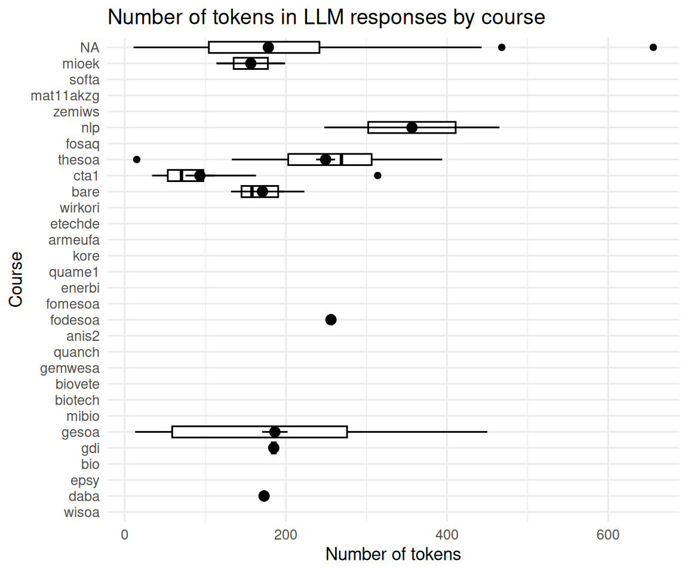
2.16 sessionInfo
sessioninfo::session_info()
## ─ Session info ───────────────────────────────────────────────────────────────
## setting value
## version R version 4.5.1 (2025-06-13)
## os Ubuntu 25.10
## system x86_64, linux-gnu
## ui X11
## language (EN)
## collate de_DE.UTF-8
## ctype de_DE.UTF-8
## tz Europe/Berlin
## date 2025-12-21
## pandoc 3.6.3 @ /snap/rstudio/25/resources/app/bin/quarto/bin/tools/x86_64/ (via rmarkdown)
## quarto 1.7.32 @ /snap/rstudio/25/resources/app/bin/quarto/bin/quarto
##
## ─ Packages ───────────────────────────────────────────────────────────────────
## package * version date (UTC) lib source
## abind 1.4-8 2024-09-12 [3] CRAN (R 4.4.1)
## backports 1.5.0 2024-05-23 [3] CRAN (R 4.4.1)
## base64url 1.4 2018-05-14 [3] CRAN (R 4.0.1)
## bayestestR * 0.17.0 2025-08-29 [1] RSPM (R 4.5.1)
## broom 1.0.10 2025-09-13 [1] RSPM
## callr 3.7.6 2024-03-25 [3] CRAN (R 4.4.0)
## car 3.1-3 2024-09-27 [3] CRAN (R 4.4.1)
## carData 3.0-5 2022-01-06 [3] CRAN (R 4.1.2)
## cli 3.6.5 2025-04-23 [1] CRAN (R 4.5.1)
## coda 0.19-4.1 2024-01-31 [1] RSPM
## codetools 0.2-20 2024-03-31 [4] CRAN (R 4.3.3)
## correlation * 0.8.8 2025-07-08 [1] RSPM (R 4.5.1)
## data.table 1.17.8 2025-07-10 [1] RSPM (R 4.5.1)
## datawizard * 1.3.0 2025-10-11 [1] RSPM (R 4.5.1)
## dichromat 2.0-0.1 2022-05-02 [3] CRAN (R 4.2.0)
## digest 0.6.39 2025-11-19 [1] CRAN (R 4.5.1)
## dplyr * 1.1.4 2023-11-17 [3] CRAN (R 4.4.2)
## easystats * 0.7.5 2025-07-11 [1] RSPM (R 4.5.1)
## effectsize * 1.0.1 2025-05-27 [1] RSPM (R 4.5.1)
## emmeans 1.10.7 2025-01-31 [3] CRAN (R 4.4.2)
## estimability 1.5.1 2024-05-12 [3] CRAN (R 4.4.2)
## evaluate 1.0.5 2025-08-27 [1] CRAN (R 4.5.1)
## farver 2.1.2 2024-05-13 [3] CRAN (R 4.4.1)
## fastmap 1.2.0 2024-05-15 [3] CRAN (R 4.4.1)
## forcats * 1.0.0 2023-01-29 [3] CRAN (R 4.2.2)
## Formula 1.2-5 2023-02-24 [3] CRAN (R 4.2.2)
## fs 1.6.6 2025-04-12 [1] CRAN (R 4.5.1)
## generics 0.1.4 2025-05-09 [1] CRAN (R 4.5.1)
## ggplot2 * 4.0.1 2025-11-14 [1] RSPM (R 4.5.1)
## ggpubr * 0.6.2 2025-10-17 [1] RSPM
## ggsignif 0.6.4 2022-10-13 [3] CRAN (R 4.2.2)
## glue 1.8.0 2024-09-30 [3] CRAN (R 4.4.2)
## gt * 1.1.0 2025-09-23 [1] RSPM (R 4.5.1)
## gtable 0.3.6 2024-10-25 [3] CRAN (R 4.4.2)
## hms 1.1.3 2023-03-21 [3] CRAN (R 4.3.1)
## htmltools 0.5.8.1 2024-04-04 [3] CRAN (R 4.4.0)
## htmlwidgets 1.6.4 2023-12-06 [3] CRAN (R 4.3.2)
## igraph 2.1.4 2025-01-23 [3] CRAN (R 4.5.0)
## insight * 1.4.2 2025-09-02 [1] RSPM (R 4.5.1)
## jsonlite 2.0.0 2025-03-27 [1] CRAN (R 4.5.1)
## knitr * 1.50 2025-03-16 [3] CRAN (R 4.4.3)
## labeling 0.4.3 2023-08-29 [3] CRAN (R 4.3.1)
## lattice 0.22-7 2025-04-02 [4] CRAN (R 4.4.3)
## lifecycle 1.0.4 2023-11-07 [3] CRAN (R 4.3.2)
## lubridate * 1.9.4 2024-12-08 [3] CRAN (R 4.4.2)
## magrittr 2.0.4 2025-09-12 [1] CRAN (R 4.5.1)
## MASS 7.3-65 2025-02-28 [4] CRAN (R 4.4.3)
## Matrix 1.7-3 2025-03-11 [4] CRAN (R 4.4.3)
## mgcv 1.9-3 2025-04-04 [4] CRAN (R 4.4.3)
## modelbased * 0.13.0 2025-08-30 [1] RSPM (R 4.5.1)
## multcomp 1.4-28 2025-01-29 [3] CRAN (R 4.4.2)
## mvtnorm 1.3-3 2025-01-10 [1] RSPM
## nlme 3.1-168 2025-03-31 [4] CRAN (R 4.4.3)
## parameters * 0.28.2 2025-09-10 [1] RSPM (R 4.5.1)
## performance * 0.15.2 2025-10-06 [1] RSPM (R 4.5.1)
## pillar 1.11.1 2025-09-17 [1] CRAN (R 4.5.1)
## pkgconfig 2.0.3 2019-09-22 [3] CRAN (R 4.0.1)
## prettyunits 1.2.0 2023-09-24 [3] CRAN (R 4.3.1)
## processx 3.8.6 2025-02-21 [3] CRAN (R 4.4.3)
## ps 1.9.0 2025-02-18 [3] CRAN (R 4.4.3)
## purrr * 1.2.0 2025-11-04 [1] RSPM (R 4.5.1)
## R6 2.6.1 2025-02-15 [3] CRAN (R 4.4.3)
## RColorBrewer 1.1-3 2022-04-03 [3] CRAN (R 4.2.0)
## readr * 2.1.6 2025-11-14 [1] RSPM
## report * 0.6.2 2025-11-03 [1] RSPM (R 4.5.1)
## rlang 1.1.6 2025-04-11 [1] CRAN (R 4.5.1)
## rmarkdown 2.30 2025-09-28 [1] RSPM (R 4.5.1)
## rstatix 0.7.2 2023-02-01 [3] CRAN (R 4.2.2)
## rstudioapi 0.17.1 2024-10-22 [3] CRAN (R 4.4.1)
## S7 0.2.1 2025-11-14 [1] RSPM (R 4.5.1)
## sandwich 3.1-1 2024-09-15 [3] CRAN (R 4.4.1)
## sass 0.4.10 2025-04-11 [1] RSPM (R 4.5.1)
## scales * 1.4.0 2025-04-24 [1] RSPM (R 4.5.1)
## secretbase 1.0.5 2025-03-04 [1] RSPM
## see * 0.12.0 2025-09-14 [1] RSPM (R 4.5.1)
## sessioninfo 1.2.3 2025-02-05 [3] CRAN (R 4.4.3)
## stringi 1.8.7 2025-03-27 [1] CRAN (R 4.5.1)
## stringr * 1.6.0 2025-11-04 [1] CRAN (R 4.5.1)
## survival 3.8-3 2024-12-17 [4] CRAN (R 4.4.2)
## targets * 1.11.4 2025-09-13 [1] RSPM
## TH.data 1.1-3 2025-01-17 [3] CRAN (R 4.4.2)
## tibble * 3.3.0 2025-06-08 [1] CRAN (R 4.5.1)
## tidyr * 1.3.1 2024-01-24 [3] CRAN (R 4.3.2)
## tidyselect 1.2.1 2024-03-11 [3] CRAN (R 4.4.0)
## tidyverse * 2.0.0 2023-02-22 [3] CRAN (R 4.4.2)
## timechange 0.3.0 2024-01-18 [3] CRAN (R 4.4.3)
## tinytable * 0.15.1 2025-11-02 [1] CRAN (R 4.5.1)
## tzdb 0.5.0 2025-03-15 [3] CRAN (R 4.4.3)
## vctrs 0.6.5 2023-12-01 [3] CRAN (R 4.3.2)
## withr 3.0.2 2024-10-28 [3] CRAN (R 4.4.1)
## xfun 0.54 2025-10-30 [1] CRAN (R 4.5.1)
## xml2 1.5.0 2025-11-17 [1] CRAN (R 4.5.1)
## xtable 1.8-4 2019-04-21 [3] CRAN (R 4.0.1)
## yaml 2.3.10 2024-07-26 [3] CRAN (R 4.4.1)
## zoo 1.8-14 2025-04-10 [3] CRAN (R 4.4.3)
##
## [1] /home/sebastian-sauer/R/x86_64-pc-linux-gnu-library/4.5
## [2] /usr/local/lib/R/site-library
## [3] /usr/lib/R/site-library
## [4] /usr/lib/R/library
## * ── Packages attached to the search path.
##
## ──────────────────────────────────────────────────────────────────────────────Wiederverwendung
MIT
Zitat
Mit BibTeX zitieren:
@online{sauer,
author = {Sauer, Sebastian},
title = {Challenge 07 -\/- Solution},
url = {https://sebastiansauer.github.io/hans-hackathon2025/challenge07-solution.html},
langid = {de-DE}
}
Bitte zitieren Sie diese Arbeit als:
Sauer, Sebastian. n.d. “Challenge 07 -- Solution.” https://sebastiansauer.github.io/hans-hackathon2025/challenge07-solution.html.